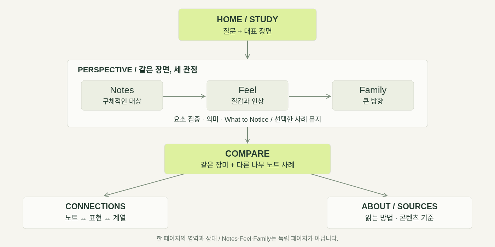
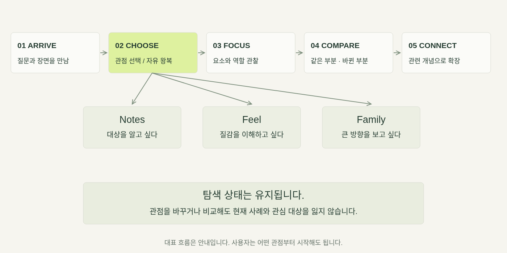
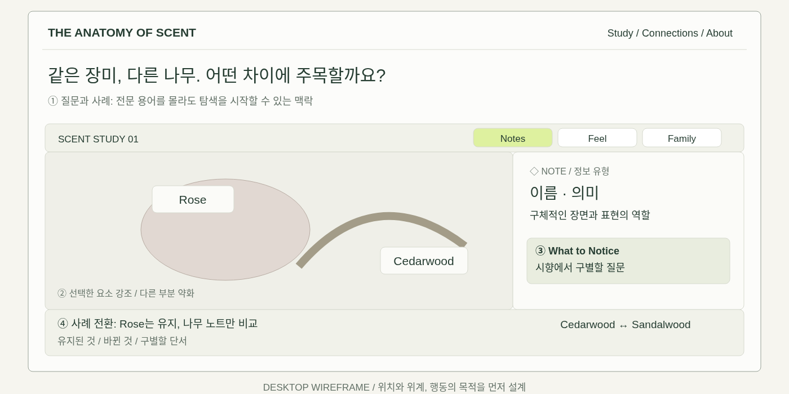
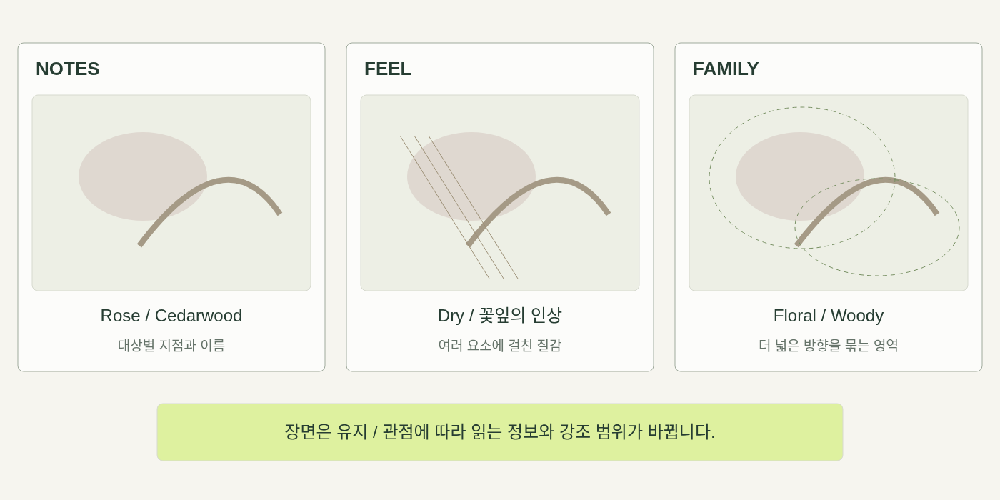
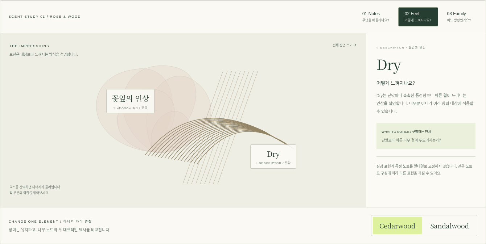
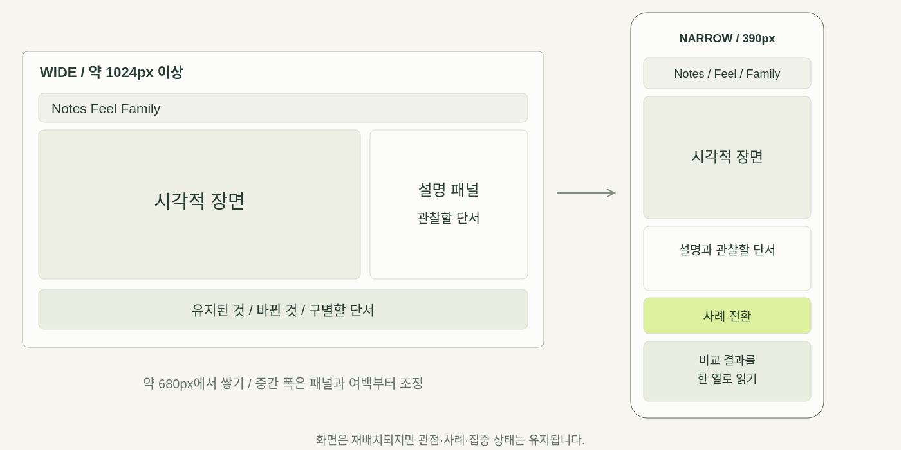
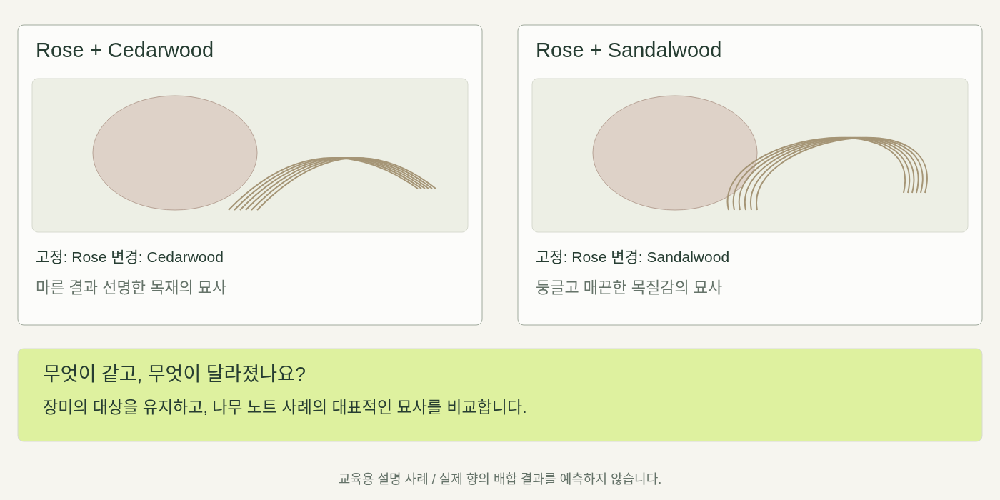

FRONT-END WEB / WEEK 06
The Anatomy
of Scent
of Scent
One scent. Three perspectives.
하나의 향 설명을 여러 관점으로 읽고,
작은 차이를 직접 발견하는 웹 경험.
작은 차이를 직접 발견하는 웹 경험.
MIDTERM DESIGN PROPOSAL · 2026

THE ANATOMY OF SCENT / MIDTERM DESIGN PRESENTATION
01
01 / THE PROBLEM
단어를 알아도, 차이는 남습니다.
“Woody = 나무 향” 다음에 이해해야 할 것은 무엇일까요?
“Powdery floral with soft musk…”
01 / MEANING
어떤 느낌인가?
단어가 가리키는 대상과
질감이 막연합니다.
질감이 막연합니다.
02 / RELATION
무엇이 다른가?
비슷한 표현의 공통점과
구별 기준이 흐립니다.
구별 기준이 흐립니다.
03 / ATTENTION
어디에 주목할까?
다음 시향에서 관찰할
구체적인 질문이 필요합니다.
구체적인 질문이 필요합니다.
THE ANATOMY OF SCENT / MIDTERM DESIGN PRESENTATION
02
02 / CONCEPT & PREMISE
하나의 향을 읽는 세 가지 관점.
같은 장면에서 대상, 질감, 큰 방향을 번갈아 읽습니다.
Read the scent.
Reveal its structure.
Reveal its structure.
향 설명 → 관점 전환 → 차이 관찰 → 관계 이해
대상: 용어가 익숙하지 않거나,
단어를 알아도 조합이 막연한 방문자
단어를 알아도 조합이 막연한 방문자
Notes
무엇을 떠올리나요?
Feel
어떻게 느껴지나요?
Family
어느 방향인가요?
THE ANATOMY OF SCENT / MIDTERM DESIGN PRESENTATION
03
03 / INFORMATION STRUCTURE
관련되어도, 같은 종류의 정보는 아닙니다.
한 목록에 섞지 않고, 각각 답하는 질문을 구분합니다.
◇ NOTE / 대상
Rose · Sandalwood
구체적인 향의 대상.
실제 원료의 사용이나
배합 비율을 보장하지 않습니다.
실제 원료의 사용이나
배합 비율을 보장하지 않습니다.
○ DESCRIPTOR / 질감과 인상
Dry · Creamy
느껴지는 방식의 표현.
여러 노트와 계열에
겹쳐 적용될 수 있습니다.
여러 노트와 계열에
겹쳐 적용될 수 있습니다.
● FAMILY / 큰 방향
Floral · Woody
전체적인 성격을 묶는 분류.
분류 체계에 따라
이름과 경계가 달라집니다.
분류 체계에 따라
이름과 경계가 달라집니다.
핵심: 이름을 외우는 것에서, 무엇을 설명하는지 읽는 것으로.
THE ANATOMY OF SCENT / MIDTERM DESIGN PRESENTATION
04
04 / INTENDED EXPERIENCE
탐색 전후에 무엇이 달라질까요?
FEEL
호기심
조용한 관찰실의
차분한 분위기
차분한 분위기
NOTICE
정보의 차이
대상·질감·큰 방향의
서로 다른 역할
서로 다른 역할
DISCOVER
다른 가능성
같은 우디 방향 안의
다른 질감
다른 질감
UNDERSTAND
연결의 의미
관련되어도
동의어는 아님
동의어는 아님
DO
직접 관찰
선택·집중·전환·비교·
다시 연결하기
다시 연결하기
“그냥 나무 향?” → “마른 결과 매끈한 질감을 따로 관찰해볼 수 있겠다.”
THE ANATOMY OF SCENT / MIDTERM DESIGN PRESENTATION
05
05 / THE DIFFERENCE
차별화는 기능보다, 이해의 순서에 있습니다.
지도와 비교가 존재한다는 사실만으로 새로움을 주장하지 않습니다.
ENTRY
하나의 궁금증
같은 장미, 다른 나무.
구체적인 차이를
탐색의 입구로 삼습니다.
구체적인 차이를
탐색의 입구로 삼습니다.
ACTION
같은 장면의 다른 읽기
대상·질감·큰 방향을
관점 전환으로
구조적으로 경험합니다.
관점 전환으로
구조적으로 경험합니다.
OUTCOME
다음 시향의 단서
공통점·바뀐 요소·관찰 질문을
돌려주어 사용자가
차이를 말할 수 있게 합니다.
돌려주어 사용자가
차이를 말할 수 있게 합니다.
분류는 탐색의 출발점이면서 동시에, 사례를 이해한 뒤 다시 읽을 수 있는 정보입니다.
THE ANATOMY OF SCENT / MIDTERM DESIGN PRESENTATION
06
06 / REFERENCES & INSPIRATION
참고 자료를 설계 판단으로 연결합니다.
사용자 제공 레퍼런스 기반 분석 / 원문 접근 상태는 부록에 표시했습니다.
Fragrantica / Perfume Finder
노트와 제품을 탐색하는 구조
제품 탐색 전에 언어와 관계를 이해
Scent Verdict / Scent Wheel
계열을 공간에 조직하는 접근
위치에 더해 연결의 이유를 문장으로
Michael Edwards / Fragrance Wheel
향 계열 분류의 참고 기준
계열·노트·표현의 역할을 구분
Everfumed / Scent Sign Quiz
선택으로 진입점을 만드는 경험
취향 판정 대신 다음 관찰 질문 제공
경험: Explorable Explanations / 시각 언어: 에디토리얼과 식물 관찰 노트
THE ANATOMY OF SCENT / MIDTERM DESIGN PRESENTATION
07
07 / MOOD & VISION BOARD
Quiet. Tactile. Curious. Layered.
꽃잎, 결, 입자, 직물 — 감각을 생각해 볼 단서.
조용한 관찰실
만져질 듯한 소재
겹침과 분리
느린 발견
만져질 듯한 소재
겹침과 분리
느린 발견
자체 생성 시각 자료.
감각의 비유이며
실제 냄새를 재현하지 않습니다.
감각의 비유이며
실제 냄새를 재현하지 않습니다.
THE ANATOMY OF SCENT / MIDTERM DESIGN PRESENTATION
08
08 / VISUAL LANGUAGE
읽기 위한 여백. 선택을 위한 강조.
PAPER / #F6F5EF
PINE / #263D32
SELECT / #DEF19F
ROSE / #D6A69B
SAND / #D8C8A5
A word.
A different perspective.
A different perspective.
제목: Georgia serif / 본문·UI: DM Sans + 한국어 sans
영문 제목과 한국어 설명 사이의 위계를 명확하게.
영문 제목과 한국어 설명 사이의 위계를 명확하게.
◇ Note ○ Descriptor ● Family
유형 이름과 기호를 함께 표시
선택한 요소 강조 / 다른 요소 약화
짧은 전환 / reduced motion 지원
선택한 요소 강조 / 다른 요소 약화
짧은 전환 / reduced motion 지원
THE ANATOMY OF SCENT / MIDTERM DESIGN PRESENTATION
09
09 / SITEMAP
한 페이지, 서로 연결되는 영역과 상태.

THE ANATOMY OF SCENT / MIDTERM DESIGN PRESENTATION
10
10 / USER FLOW
순서가 있는 안내, 자유롭게 왕복하는 탐색.

THE ANATOMY OF SCENT / MIDTERM DESIGN PRESENTATION
11
11 / WIREFRAME
배치의 목적을 먼저 설계합니다.
질문 → 관점 → 장면과 설명 → 하나의 차이 관찰

THE ANATOMY OF SCENT / MIDTERM DESIGN PRESENTATION
12
12 / KEY DESIGN STATES
장면은 유지하고, 읽는 정보가 바뀝니다.
Notes는 대상, Feel은 질감, Family는 큰 방향을 강조합니다.

THE ANATOMY OF SCENT / MIDTERM DESIGN PRESENTATION
13
13 / DESIGN PROTOTYPE
같은 장면을 직접 바꾸어 읽어보세요.
별도 제출용 프로토타입 / 현재 실행되는 v1과 구분합니다.

TRY THE LENSES
01 Notes
대상을 읽기
02 Feel
질감을 읽기
03 Family
큰 방향 읽기
대상을 읽기
02 Feel
질감을 읽기
03 Family
큰 방향 읽기
관점을 바꾸어도 현재 사례와 관심 대상은 유지됩니다.
THE ANATOMY OF SCENT / MIDTERM DESIGN PRESENTATION
14
14 / RESPONSIVE INTENTIONS
줄이기보다, 읽는 관계를 재배치합니다.
넓은 화면은 공간적으로, 좁은 화면은 이해의 순서로.

대략 680px에서 쌓기 · 방향키 탭 전환 · 명시적 선택 상태 · 움직임 감소 설정
THE ANATOMY OF SCENT / MIDTERM DESIGN PRESENTATION
15
APPENDIX A / COMPARISON DETAIL
같은 부분을 남겨야, 차이가 읽힙니다.
대표 사례 A / B — 향의 결과를 계산한 시뮬레이션이 아닙니다.

THE ANATOMY OF SCENT / MIDTERM DESIGN PRESENTATION
16
APPENDIX B / WHAT EXISTS & WHAT COMES NEXT
현재 실험과 다음 개발 범위를 구분합니다.
V1 / IMPLEMENTED
관계 지도와 비교
12개 개념 / 설명이 있는 관계
관련 개념 강조와 표현 비교
11개 브라우저 테스트 통과
320–1440px 레이아웃 검증
관련 개념 강조와 표현 비교
11개 브라우저 테스트 통과
320–1440px 레이아웃 검증
V2 / DESIGN PROTOTYPE
세 관점의 한 장면
Notes / Feel / Family 전환
요소 집중과 사례 A/B 전환
모바일·키보드 조작 실험
기존 v1과 별도 파일
요소 집중과 사례 A/B 전환
모바일·키보드 조작 실험
기존 v1과 별도 파일
NEXT / REVIEW & BUILD
피드백 뒤 통합
대표 화면과 관계 지도 연결
콘텐츠 용례와 출처 검토
사용자의 이해 변화 확인
시간 변화는 후속 확장
콘텐츠 용례와 출처 검토
사용자의 이해 변화 확인
시간 변화는 후속 확장
현재 오각형은 편집된 예시입니다. 다음 중심 경험은 수치보다 관찰 단서를 우선합니다.
THE ANATOMY OF SCENT / MIDTERM DESIGN PRESENTATION
17
APPENDIX C / COURSE CONNECTION
상호작용에는 이해를 돕는 이유가 있습니다.
W01
Storytelling
추상적인 장면이 읽을 수 있는 구조로 바뀜
W02
Intended Experience
사용자가 질문을 갖고 선택하며 발견
W03
Visual Language
결·입자·색·여백이 관찰의 단서가 됨
W04
Spatial Relationships
대상과 역할을 공간에서 분리하고 연결
W05
A Web That Responds
선택과 화면 크기에 따라 강조와 배치가 변화
Field notes: 관계의 이유, 좁은 화면의 재구성, 키보드·움직임 감소 실험을 기록했습니다.
THE ANATOMY OF SCENT / MIDTERM DESIGN PRESENTATION
18
APPENDIX D / REFERENCES & CREDIT
무엇을 참고했고, 무엇을 직접 만들었는가?
검토 상태: 제공 자료 기반 분석 / 외부 원문 접근은 프록시 403으로 제한.
자체 제작: AI 생성 무드보드 · 직접 설계한 다이어그램 · 실제 프로토타입 캡처.
시장 유일성이나 측정된 향 데이터를 주장하지 않습니다.
자체 제작: AI 생성 무드보드 · 직접 설계한 다이어그램 · 실제 프로토타입 캡처.
시장 유일성이나 측정된 향 데이터를 주장하지 않습니다.
THE ANATOMY OF SCENT / MIDTERM DESIGN PRESENTATION
19
APPENDIX E / FEEDBACK
탐색 뒤, 어떤 차이를 말할 수 있나요?
01
Rose · Floral · Creamy는 서로 어떤 정보인가요?
02
관점을 바꾸며 무엇을 새롭게 발견했나요?
03
두 사례에서 무엇이 유지되고 달라졌나요?
04
다음 시향에서 어떤 차이에 주목하겠어요?
목표: 향을 읽고, 스스로 관찰할 질문을 갖게 하는 것.
THE ANATOMY OF SCENT / MIDTERM DESIGN PRESENTATION
20
APPENDIX F / REQUIREMENTS CHECK
제출 항목을 빠짐없이 연결했습니다.
Concept / Premise
3장 / PROJECT-PROPOSAL.md
Intended Experience
5장 / Feel·Notice·Discover·Understand·Do
References / Inspiration
7장·19장 / REFERENCE-NOTES.md
Mood / Vision Board
8장 / assets/moodboard.png
Visual Language
9장 / 색·서체·기호·강조·움직임
Sitemap
10장 / assets/sitemap.svg
User Flow
11장 / assets/user-flow.svg
Wireframes
12–13장·16장 / 주요 상태 배치도
Responsive Intentions
15장 / 데스크톱·모바일 비교
THE ANATOMY OF SCENT / MIDTERM DESIGN PRESENTATION
21